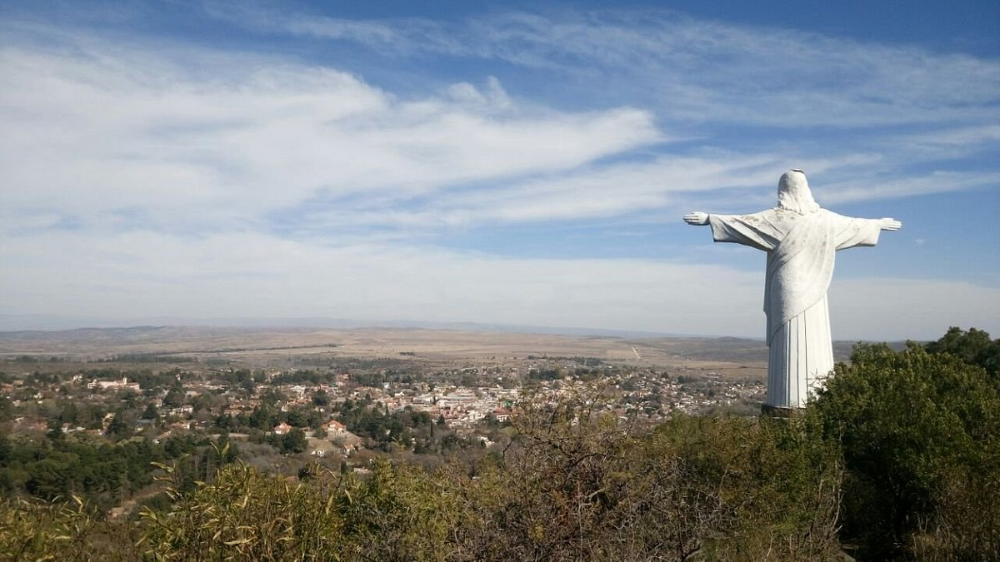
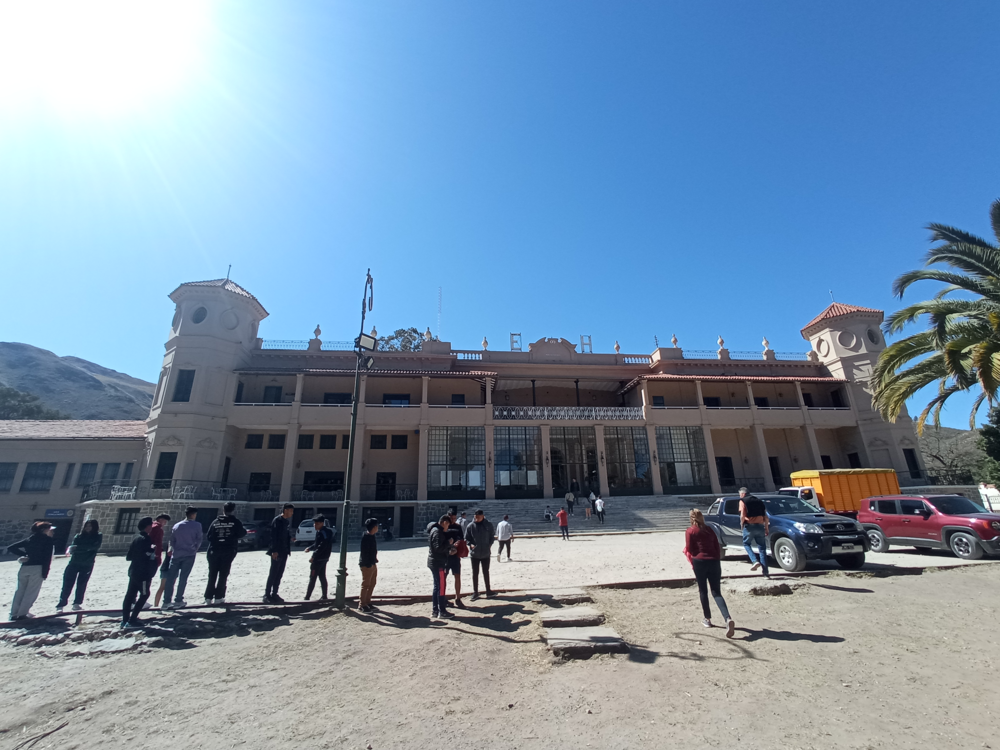
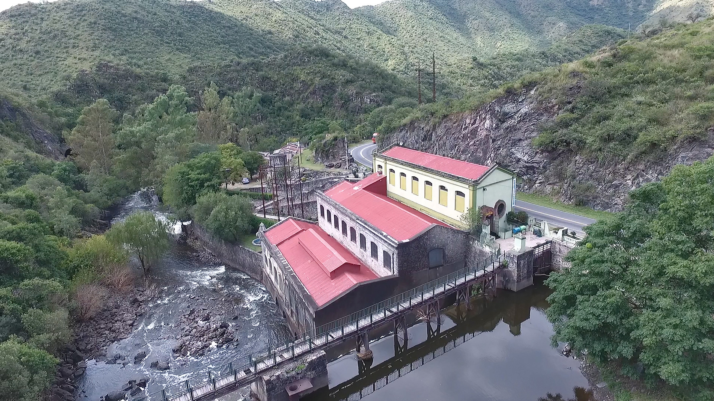

Hoy es el gran día, me levanté y lo primero que se me vino a la cabeza fue la preocupación de que algo me llegara a faltar. terminé de armar mi maleta y mochila, revise una vez más si nada me faltaba y procedí a esperar tranquilamente, sabiendo que tenia todo preparado para esta noche.
Y así llegó la noche, todos nos fuimos encontrando dentro de la escuela. 9:50 p.m. estabamos todos reunidos, empacamos las cosas y subimos al bus.
Un bus de dos pisos, grande e increible a primera vista de la empresa llamada la veloz del norte. Algo de lo que realmente yo no me lo esperaba, ya que por alguna razón mis expectativas eran bajas.
Desde la ventana veia cómo mis padres no dejaban de despedirse hasta que los dejé de ver y eso lo aprecio bastante.
Así fue cómo empezó, alejandonos cada vez más de nuesta ciudad, percibiendo la hermosa y espeluznante oscuridad. Cómo extrañaba esta sensación de felicidad.
Dia 1 LLegamos a Córdoba-Casa Grande-Lunes 29 de Agosto
Cuando llegamos a Casa Grande desvalijamos el bus, entrando al lugar nos indicaron donde estaban las habitaciones de hombres y mujeres, después nos llamaron para desayunar y al finalizar nos dieron tiempo hasta el almuerzo, para acomodar nuestras pertenencias y conocer el lugar.
Cuando llegó el almuerzo nos dieron Paty con puré de papa.
Despues de almorzar, nos llamaron a todos para ir a recojer residuos afuera de la casa, cuando salimos todos teniamos guantes de latex y bolsas grandes, empezamos a recoger residuos por todo el camino, pasamos por un puente, despues un sitio donde estaba un rio con rocas grandes, pasamos por ese camino hasta el fin del camino pero no llegamos a escalar la montaña debido a que teniamos bolsas llenas de residuos y pesaba mucho, por lo tanto tuvimos que volver por el mismo camino
Antes de regresar a Casa Grande dejamos las bolsas en los botes de basura del lugar y pasamos por un parque, ahi estuvimos unos 20 minutos debido que ya se estaba haciendo tarde, de regreso a la casa, todos merendamos y al finalizar teniamos tiempo libre hasta la cena, la mayoria se fue a duchar debirdo al gran cansancio que genero el recorrido, despues nos avisaron que la sala de juegos estaba abierta, la mayoria fue ahi, en el lugar habia metogoles y una cancha de ping pong
Cuando llego la hora de la cena, todos fuimos a la mesa para cenar, de entrada nos dieron sopa y de principal boloñesa, al finalizar cada uno fue a su habitacion pa prepararse para el dia siguiente
Dia 2 Partimos a La Cumbre al Museo Mujica Lainez y al Cristo Redentor-Martes 30 de Agosto

Despues de levantarnos y desayunar, el bus estaba listo para partir a La Cumbre para conocer el Museo Mujica Lainez, cuando llegamos habia un enorme jardin con grnades escalones, la guia nos separo en 2 grupos de 20, un grupo fue a conocer la casa principal de Mujica mientras que el otro grupo fue a la casa de recepcion e informes, en esa casa estaban los libros y obras que Manuel Mujica habia publicado.
En otra area de la casa habia un corto video de una entrevista que Joaquin Soler le hizo a Manuel Mujica, despues de conocer el lugar el otro grupo le tocaba conocer la recepcion y a nosotros conocer la casa principal, llegando al lugar conocimos el comedor, los pasillos llenos de cuadros y pinturas de diferentes tamaños y por ultimo subimos al piso de arriba donde estaba la habitacion en el cual escribia sus libros y descansaba.
Al finalizar el recorrido nos sentamos en el jardin de afuera donde estaban los escalones para comer sandwich de milanesa, despues de eso nos subimos al bus para ir a conocer el Cristo Redentor, al llegar subimos hasta arriba para contemplar la hermosa vista desde arriba y antes de irnos hicimos una reflexion entre todos, al bajar subimos al bus para partir de regreso a Casa Grande.

Dia 3 Partimos a La Falda al Hotel Eden y Parque Eden-Miercoles 31 de Agosto
Nos levantamos y desayunamos, el bus ya estaba listo para ir a La Falda a conocer el Hotel Eden, llegando al lugar entramos al Salon Chino donde nos mostraron un video corto del resumen de la historia del hotel, al terminar el video el guia nos llevo afuera donde estaba El Teatrino, nos conto y mostro las habitaciones donde se hospedaban los ricos y los pobres, despues de eso recorrimos algunas areas mas del hotel.
Recorrimos el area donde estaban las 2 maquinas pesadas que daban energia a todo el hotel, la habitacion de la Suite Presidencial en el cual se hospedaban los presidentes y gobernantes mas importantes de esa epoca y por ultimo las habitaciones donde estaban las personas que padecian de tuberculosis, al finalizar todo el recorrido bajamos al subsuelo donde se encontraba la tienda de recuerdos y souvenirs, despues de eso salimos afuera para comer entre todos empanadas
Despues de comer a las 14:00 fuimos al Parque Eden donde los primero que hicimos fue tirolesa y al finalizar nos dividieron en 2 grupos de 20, un grupo fue a escalar mientras que el otro grupo fue a hacer tiro con arco y flecha, estuvimos ahi unos 20 minutos despues teniamos que cambiar de lugar y antes de irnos jugamos al metegol humanos otros 20 minutos, cuando vino el bus nos fuimos de regreso a Casa Grande.
Dia 4 Partimos a Villa Carlos Paz al Museo Usina Molet y La Quinta-Jueves 1 de Septiembre
Nos levantamos a las 6:20 porque teníamos que desayunar a las 7:30 y partir a las 8:30, cuando llego el bus partimos primero al Museo Usina Molet, llegando al lugar la guía nos mostró un maquetado del funcionamiento de la red hidráulica del agua, después bajamos al subsuelo donde habían varios medidores de volteos de distintos tamaños.
Bajando más abajo nos mostraron 2 cortos videos sobre el funcionamiento y la historia del lugar, después de eso recorrimos el lugar donde estaban las maquinas grandes y el sitio donde trabajaban los antiguos trabajadores, al finalizar el recorrido partimos a Villa Carlos Paz.
Cuando llegamos caminamos al restaurante La Estancia para almorzar entre todos, después de almorzar nos fuimos caminando hasta el Reloj Cucú y en el camino pasamos por el Puente Peatonal, llegando al lugar al frente estaba La Fabrica de Alfajores donde íbamos a entrar más tarde, mientras tanto nos dieron hasta las 16:00 para recorrer el lugar en grupos donde había muchos locales y tiendas de recuerdos.
Llegando la hora entramos a La Quinta y merendamos entre todos un rico café con medialunas, al terminar la merienda nos dieron una bolsa con una caja de alfajores a cada uno y al salir tuvimos que caminar hasta el bus para partir de regreso a Casa Grande
Cuando llegamos a la casa ya estaba anocheciendo y la mayoría se fue a duchar debido al cansancio que genero el viaje, más tarde nos llamaron para cenar, de entrada nos dieron sopa de verduras y de principal pizza, después de cenar tuvimos tiempo libre.
Antes de irnos a dormir hicimos una fiesta de disfraces y después jugamos al juego de la silla, finalizando la fiesta, cada uno se fue a su habitación a dormir o a ordenar sus maletas debido a que al día siguiente partíamos de regreso a Buenos Aires.

Dia 5 Partimos de Regreso a Buenos Aires-Viernes 2 de Septiembre
Vuelvo a mi hogar!! y es raro porque ya me estaba acostumbrando a esto(en realidad no).
Nos levantamos 7:30 para alistar todo y dejarloo impecable el lugar, rato después fuimos a desayunar, el cual seria el último desayuno del viaje, y así fue cómo todo terminó, ingresamos al bus y partimos.
Partimos y dejamos el lugar, pero los recuerdos y emociones permanecen en nuestra memoria. Momentos malos y momentos buenos, cómo cualquier otra salida. Si hubiese sabido todo lo que sucederia, hubiese dicho: "¡Si voy!" sin habermelo pensado dos veces.
.jpg)